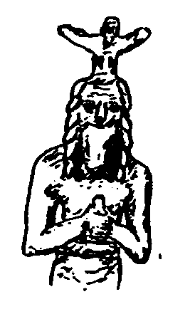
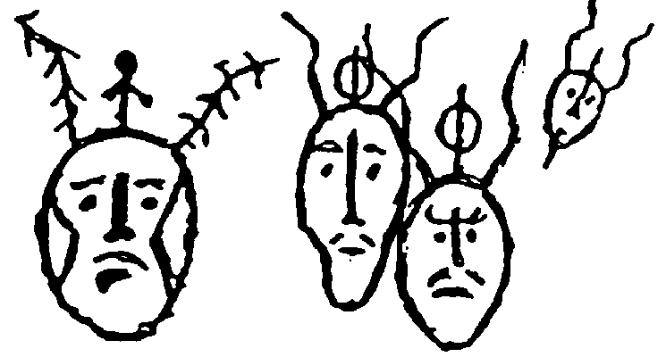
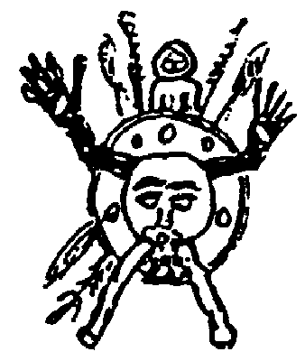
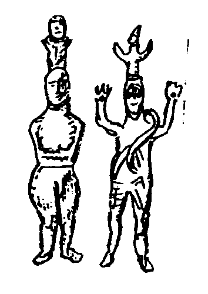
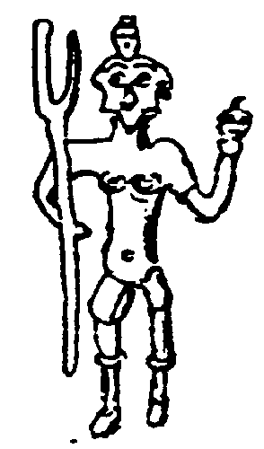
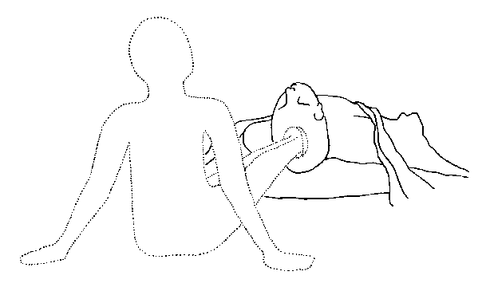
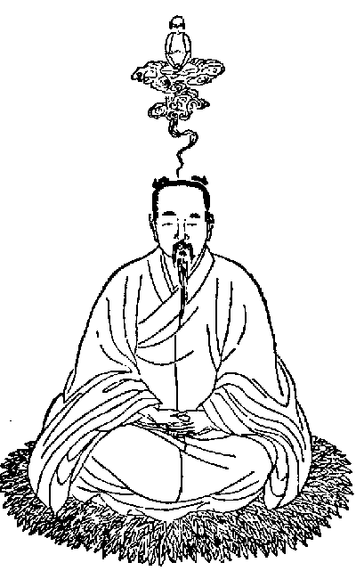

copyright @ Alfred Ballabene, Vienna, Austria, 2000
| Earth and Sky-Heaven
In the old past of human culture, in the pre-religions two
main spheres were thought to exist: In many regions additional to the two spheres earth and
heaven an underworld existed. Perhaps in former times the underworld was
associated with the womb of mother earth. |
| In the times when the first religions developed, earth
and universe was seen more differentiated, which caused an inflation of
gods. The human body was thought as a microcosm, structured in the same way
as the macrocosm. In this way earth, the region of fertility was thought in
the abdomen and the sky-heaven was thought to be located in the head. For
that reason Shamans, priests and heroes who were thought to belong to the
world of gods and demons left their body at the location of the sky region.
Their soul-body was head-born. Below you can see some rock drawings, which
show the process of the head-born soul-body leaving the body. |

| Birth of the heavenly body, leaving through the head (Fontanella):
5.000 years old figure made of copper from Mesopotamia (n. Paturi) From: Jahrbuch X der Ge.Fe.Bi. Graz, Austria, 1997/98, "Indische Felsbilder", page 62 |

| Rock drawings from the upper Jennissej
(orig. Ksica: Rock drawings from the Black Sea to the Bering Strait, p.156) From: Jahrbuch X der Ge.Fe.Bi. Graz, 1997/98, "Indische Felsbilder" (Indian rock drawings), page 62 |

| Eskimo mask from Alaska orig. Herman Wirth: "Die Heilige Urschrift", From: Jahrbuch vol. IX, X der Ge.Fe.Bi. Graz, page 305 |
 
| Brass figures from Sardinia and from the Kyklades
orig. Herman Wirth, citation like above, vol. IX, X; Ge-Fe-Bi From: Jahrbuch X der Ge.Fe.Bi. Graz, 1997/98, "Indische Felsbilder", Seite 62 |
| In our present days you can read about OBE experiences in which is reported that the subtle body was detached through the head, just as shown in the old rock drawings dating many thousand years. Below you see an illustration of such a report: |

| From E.R. Waelti, "Der dritte Kreis des Wissens, page 35, Ansata Verl. 1983 |
"....I left my body as if it was a sleeping bag. I left the body through the head and set upright moving backwards an tracking my legs out of the physical head, in which i saw a black hole as great as a fist. At the first moment my legs still were sticking in the physical body and as I draw them outwards from this tube they stretched as if they were of rubber...." (Translated from German : "Der Königsweg, aber die Nacht zeigt viele Gesichter", von E.R. Waelti) |
| In these modern OBE reports in which the body was left
through the head, nothing indicates that there would be any difference in
the quality of the subtle body in relation to the other kinds of
detachments. As it seems it makes no difference by which way you leave the
body and which part of the physical body is involved most.
In most ancient times this insight made no difference, because the most important fact was: is the person able to leave the body by will or not; and if the person can leave the body by will, this person is the owner of an heavenly body. Such thoughts of qualities of ethic or consciousness were of none importance, was it that gods and demons lived in the same realms. The feasts in heaven were crowded by a manyfold people of gods, demons, nature spirits, witches, magicians, yogis etc. Later with the come of religions and the importance of moral, which latter was an important social component, the quality of consciousness became most important. The quality of consciousness was as well the crucial difference between priests or magicians and the ordinary people. New meditative and magical techniques were developed to create a heavenly consciousness and in the same way an heavenly light body. From this point of view the Taoist techniques for the creation of a body of light and the Pho Wa techniques are to be understood. Regard that we still deal about an out-of-body theme. We now are witness of a coming sight in which OBE is not an undifferentiated experience but differs in qualities, say: if you are OBEing you can enter different realms such as hells or heavens and that is dependent of the quality of ethic and consciousness. About details on behalf of see the article: OBE in Taoism |

| The body of light leaving the Taoist through the port of
the Fontanella. (From: "Geheimnis der Goldenen Blüte", of Richard Wilhelm; Zürich, Rascher Verl., 1957) |
Source: http://mailbox.univie.ac.at/Alfred.Ballabene/english/obepart4/headborn.htm